Yahaba
Yahaba · Iwate
Yahaba
Highlighted on the Iwate map.
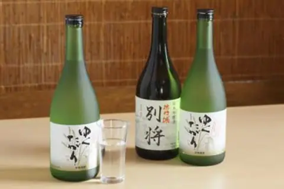
Stay
ホテルルートイン矢巾-岩手医大病院前-
Hoteruruutoin Yahaba - Iwate Idai Byouin Mae
Hotel in Yahaba, Iwate.
天然温泉 百万石の湯 スーパーホテル矢巾駅東口
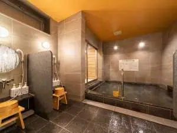
Tennen Onsen Hyakumangoku No Yu Suupaahoteru Yahaba Eki Higashiguchi
Hotel in Yahaba, Iwate.
ホテルルートイン矢巾
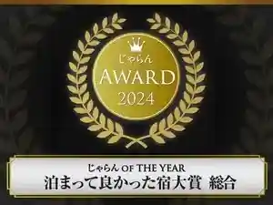
Hoteruruutoin Yahaba
Hotel in Yahaba, Iwate.
Dining
福田パン 矢巾店
Fukuda Pan Yahaba Mise
Bakery in Yahaba, Iwate.
俺のじゃじゃ
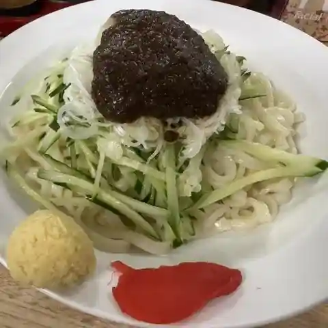
Ore Nojaja
Noodle shop in Yahaba, Iwate.
遠野食肉センター 矢巾店
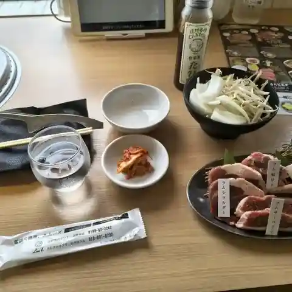
Toono Shokuniku Sentaa Yahaba Mise
Jingisukan (lamb BBQ) restaurant in Yahaba, Iwate.
ホルモン たけだ
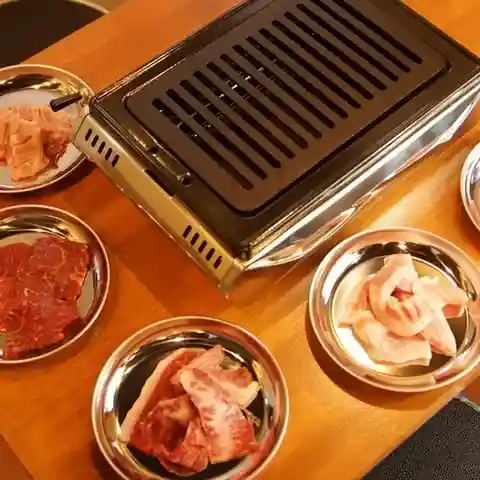
Horumon Takeda
Horumon (offal) grill in Yahaba, Iwate.
回転寿司すノ家 矢巾店
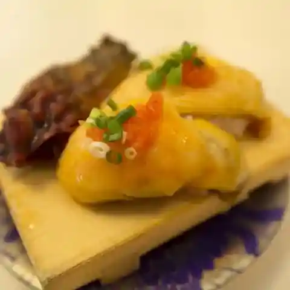
Kaitenzushi Su No Ie Yahaba Mise
Conveyor-belt sushi in Yahaba, Iwate.
焼肉 三平食堂
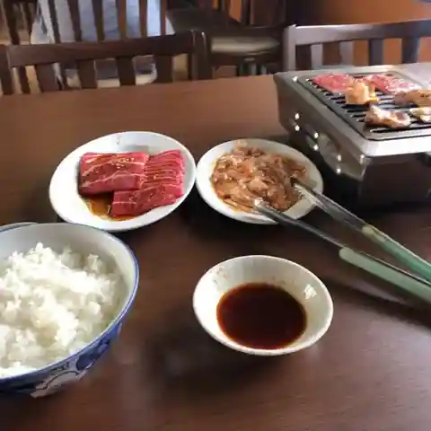
Yakiniku Sanpei Shokudou
Yakiniku (grilled meat) restaurant in Yahaba, Iwate.
はた屋
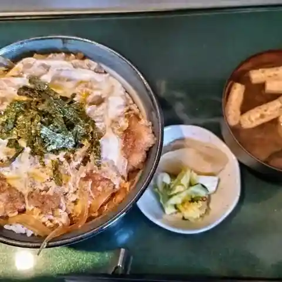
Hata Ya
Izakaya in Yahaba, Iwate.
パドック
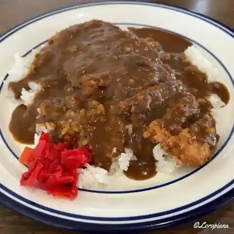
Padokku
Coffee shop in Yahaba, Iwate.
支那そば つかさ
Shina Soba Tsukasa
Ramen shop in Yahaba, Iwate.
そば 又兵衛
Soba Matabee
Soba restaurant in Yahaba, Iwate.
焼肉 ホルモン 彰
Yakiniku Horumon Akira
Yakiniku (grilled meat) restaurant in Yahaba, Iwate.
一休
Ikkyuu
Ramen shop in Yahaba, Iwate.
RAMEN MUSICA
Ramen Musica
Ramen shop in Yahaba, Iwate.
kitchen KIKUCHI
Kitchen Kikuchi
Yoshoku (Western-style) restaurant in Yahaba, Iwate.
麺処 しな川
Men Tokoro Shina Kawa
Ramen shop in Yahaba, Iwate.
お食事処 広味家
O Shokuji Tokoro Kou Aji Ie
Bento shop in Yahaba, Iwate.
北川庵
Kitagawa Iori
Soba restaurant in Yahaba, Iwate.
柳家 矢巾店
Yanagiya Yahaba Mise
Ramen shop in Yahaba, Iwate.
Pino
Pino
Coffee shop in Yahaba, Iwate.
限定食堂 SaLa
Gentei Shokudou Sala
Pasta restaurant in Yahaba, Iwate.
一風亭 矢巾口店
Ippuu Tei Yahaba Kuchi Mise
Ramen shop in Yahaba, Iwate.
ピリカ
Pirika
Ramen shop in Yahaba, Iwate.
ほっこり処 雪華
Hokkori Tokoro Yuki Hana
Izakaya in Yahaba, Iwate.
ラーメンショップ 田中店
Raamenshoppu Tanaka Mise
Ramen shop in Yahaba, Iwate.
Sights
Ore no Jaja
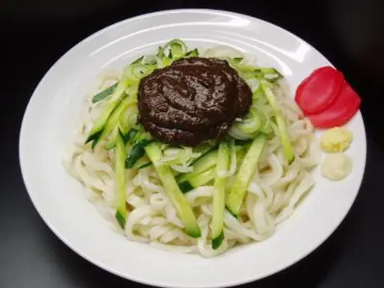
The special Jaja miso is easy to eat, even for first-timers, and has a distinctive flavor that will satisfy even those who love traditional Jaja noodles.
Hyakumangoku [Fudo Onsen] (one-day bathing facility)
Hyakumangoku [Fudo Onsen] (one-day bathing facility)
Wami Flower Park
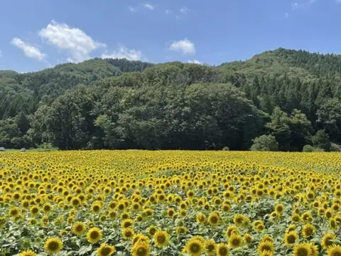
The sunflower field in the Wami district of western Yakin Town opened in 2021.
Tokutan Castle Bessho Sake and Yukutagari Shochu
Local Sake Tokutan Castle “Bessho” Shochu Yukutagari
Yahaba Town Campsite
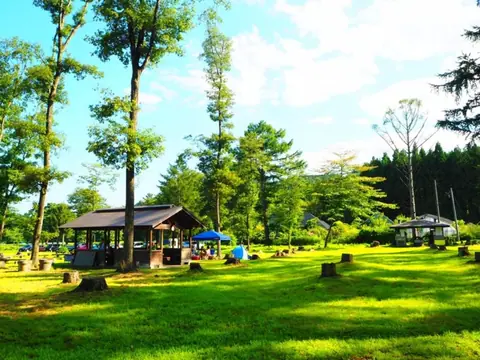
Located in the western part of Yakin Town, this campground offers easy access to Mt.
Wild Grapes
We made juice and jam using whole mountain grapes grown at the foot of Mt.
Kemuriyama Sunflower Park (next to Kemuriyama Park)
Sunflowers are planted in a 2 hectare field in the former Yanshan Nursery, located on the east side of the prefectural forestry technology center, next to Yanshan Forest Park.
Mizube no Sato
The approximately 1.4km promenade takes advantage of the rich natural forest and clear streams that spread along the Iwasaki River, and includes a suspension bridge, watermill, arbor, and a natural habitat for skunk cabbage.
Tokutan Castle Ruins
An ancient castle fence built by the conquering shogun Bunshiro Watamaro in the early Heian period (around 813).
Mt. Nanshozan
At an altitude of 848m, it has been worshiped as a mountain where the dragon god lives in the mountains since ancient times, and you can still see the lion head dedicated to praying for rain on the mountaintop.
Jonaiyama Observation Deck
Mt. Jonai is 328m above sea level.
Denen Hall (Yahaba Town Cultural Center)
It was built in 1990 as the prefecture's first music hall. It has a seating capacity of 808 people, with four seats for the disabled, six seats for mothers and children, and headphones for the hard of hearing.
Zasukan / Denpoji Temple Ruins
There is a small mountain called Zashukan at the foot of the mountain in the western part of the town, and it is said that there was a castle there, but the owner of the castle is unknown.
Kemuriyama Dam
An earthen dam with a height of 23 meters that dammed the Iwasaki River, which often caused floods and other water damage.
Nusakake Falls and Kitanosawa Otaki Falls
Nusakake Falls and Kitanosawa Otaki Falls